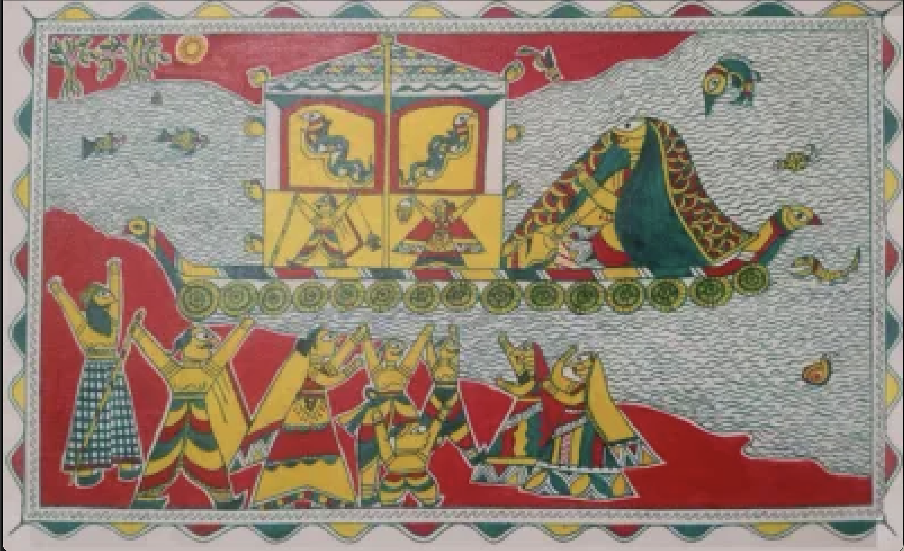

Manjusha art feels like a story unfolding in rhythm and color. Unlike Madhubani, which fills every space, Manjusha has a more structured and narrative flow—almost like a visual scroll telling a legend. The romance here is not soft or peaceful—it’s devotional and enduring. It reflects the legendary love of Bihula, who journeys through hardship to bring her husband back to life. There’s emotion, struggle, faith, and loyalty. The repeated snake motifs and bold lines give it a sense of intensity and movement, like destiny itself is being drawn.
Manjusha art originates from Bhagalpur, Bihar, and is closely tied to the Bihula–Bishahari story. • The story revolves around Bihula, a devoted wife, and Goddess Bishahari • It was traditionally painted on “Manjusha” (boxes) used during religious rituals • These boxes contained sacred items and were decorated with paintings narrating the story Over time, the art moved from ritual objects to paper and canvas, helping preserve this unique cultural tradition.
Manjusha art has a very distinct and recognizable style: • Bold Black Outlines Strong lines define figures and patterns clearly • Limited Color Palette Mainly uses pink, green, and yellow, making it visually striking • Linear Composition Figures are arranged in rows or panels—like a story being told step-by-step • Snake Motifs Snakes appear frequently, symbolizing power, danger, and divine connection • Simplified Human Figures Elongated eyes, minimal detailing, and stylized bodies •Repetition & Pattern Creates rhythm and continuity across the artwork
Manjusha art, like many folk arts, is community-based, not centered around a single famous artist. • Traditionally practiced by local artisans in Bhagalpur • Passed down through generations as part of ritual and storytelling traditions • In recent years, artists and cultural organizations have worked to revive and promote it Unlike Madhubani, Manjusha is still less commercialized, which makes it more rare and culturally unique.